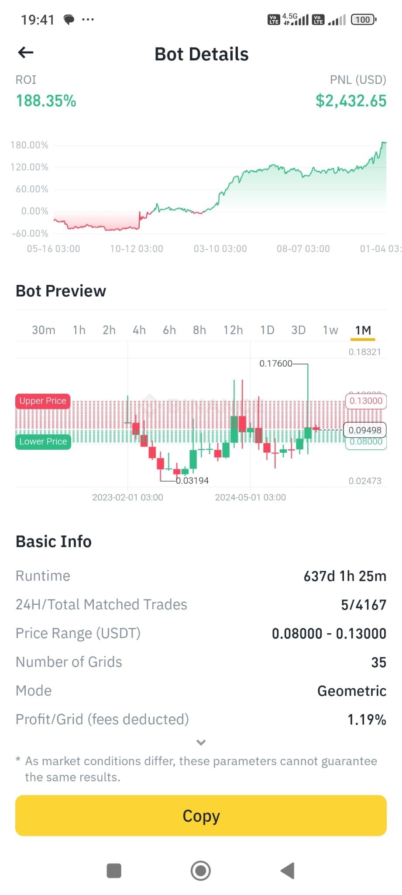

VIBUSDT Grid Bot Performans Analizi: 637 Günlük Backtest Sonuçları
Kripto para piyasalarında otomatik alım satım stratejileri giderek daha popüler hale geliyor. Bu stratejilerden biri olan "Grid Bot"lar, belirli bir fiyat aralığında otomatik alım satım yaparak kar elde etmeyi hedefler. Bu yazımızda, VIBUSDT paritesinde 637 gün boyunca çalışan bir grid botun performansını hem gerçek verilere göre hem de recinilt.com aracımızla yaptığımız backtest sonuçlarına göre analiz edeceğiz.
Gerçekleşen Bot Performansı (Ekran Görüntüsünden):
- Çalışma Süresi: 637 gün
- Toplam İşlem Sayısı: 4167
- Kâr (PNL): $2432.65
- ROI (Yatırım Getirisi): %188.35
- Fiyat Aralığı: 0.08 - 0.13 USDT
- Grid Sayısı: 35
recinilt.com ile Backtest Sonuçları:
- Sembol: VIBUSDT
- Alt Sınır: 0.08 USDT
- Üst Sınır: 0.13 USDT
- Grid Sayısı: 35
- Komisyon: %0.1
- Başlangıç Tarihi: 2023-04-08
- Bitiş Tarihi: 2025-01-04
- Çalışma Süresi: 637 gün
- Başlangıç Bakiyesi: 1000 USDT
- Tamamlanmış İşlem Sayısı: 3814
- Gridden Elde Edilen Kâr: 1592.57 USDT
- Yüzde Kazanç: %159.27
- Aylık Yüzde Kazanç: %7.5
- Yıllık Yüzde Kazanç: %90.01
Analiz ve Karşılaştırma:
Görüldüğü gibi, gerçekleşen bot performansı ile recinilt.com aracımızla yaptığımız backtest sonuçları arasında bazı farklılıklar bulunmaktadır. Gerçekleşen bot %188.35 ROI elde ederken, backtest sonuçlarımız %159.27 kazanç göstermektedir. Bu farklılıkların olası nedenleri şunlar olabilir:
- **Piyasa Koşulları:** Backtest, geçmiş veriler üzerinde simülasyon yaptığı için, gerçek zamanlı piyasa koşullarını tam olarak yansıtmayabilir. Ani fiyat hareketleri veya dalgalanmalar backtest sonuçlarını etkileyebilir.
- **5 Dakikalık Zaman Diliminde Backtest:** Gerçekleşen bot, anlık hareketlerden al-sat yaparken, backtest, 5 dakikalık zaman dilimlerindeki fiyat hareketlenmelerine bakmaktadır ve bu sebeple bazı al-sat'lar işlenmeyebilmektedir.
Backtest sonuçları ile gerçekleşen sonuçlar arasındaki farka rağmen, her iki veri de grid botların potansiyelini göstermektedir. recinilt.com'daki aracımız, kullanıcıların farklı parametrelerle backtest yaparak stratejilerini optimize etmelerine yardımcı olur.
Grid Bot Stratejileri ve Optimizasyon:
Grid bot kullanırken dikkat edilmesi gereken bazı önemli noktalar:
- **Doğru Fiyat Aralığı:** Piyasanın volatilite seviyesine uygun bir aralık belirlemek önemlidir.
- **Grid Sayısı:** Grid sayısını artırmak daha sık alım satım anlamına gelirken, kar marjını düşürebilir.
- **Risk Yönetimi:** Her zaman bir risk yönetimi stratejisi uygulamak ve kaybetmeyi göze alabileceğinizden daha fazla yatırım yapmamak önemlidir.
Sonuç:
Grid botlar, kripto piyasalarında otomatik alım satım yapmak için etkili bir araç olabilir. recinilt.com'daki backtest aracımız, kullanıcıların bu stratejiyi anlamalarına ve optimize etmelerine yardımcı olmayı amaçlamaktadır. Ancak, kripto piyasalarının riskli olduğunu ve geçmiş performansın gelecekteki sonuçların garantisi olmadığını unutmamak önemlidir.